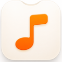
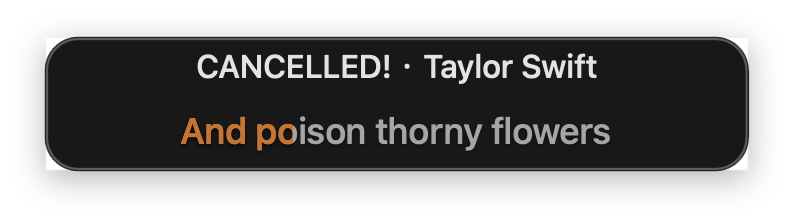
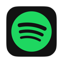
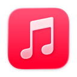
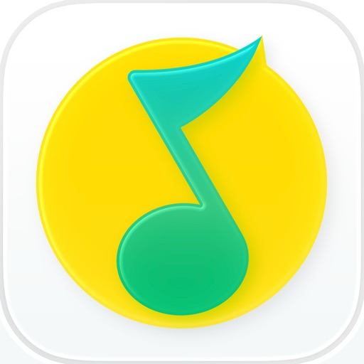
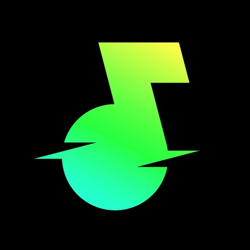
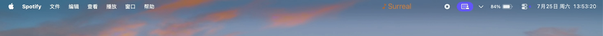

01 / REAL APP SCREENSHOT
Notch Mode
See NotchMuse’s actual lyric window beside the MacBook notch.

NotchMuseMUSIC BELONGS IN YOUR FLOW
Synced lyrics in your Mac menu bar or beside the notch. Stay in your flow.
Beta 2 is not notarized. macOS may ask you to confirm the first launch.
NotchMuse v0.8.0 Beta 2 · macOS 14+ · Apple silicon · Beta, not notarized

WORKS WITH YOUR MUSIC
Choose a player. Keep the lyrics in view.

SpotifySupported
Apple MusicSupported
QQ MusicSupported
Soda MusicSupportedTWO WAYS TO STAY IN SYNC
Choose the display that fits your Mac and your workflow.
01 / REAL APP SCREENSHOT
See NotchMuse’s actual lyric window beside the MacBook notch.
02 / REAL APP SCREENSHOT
See a real screen capture of lyrics in the macOS menu bar.

HOW IT WORKS
Open Spotify, Apple Music, NetEase Cloud Music, QQ Music, or Soda Music and start a song.
Let NotchMuse read playback details when macOS asks.
Choose Status Bar Mode or Notch Mode in Settings.
YOUR PRIVACY COMES FIRST
NotchMuse does not collect usage analytics or read your music as audio. Track details such as title and artist may be sent to lyrics providers to find a match.
INSTALLATION & SETUP
NotchMuse v0.8.0 Beta 2 requires macOS 14 or later and an Apple silicon Mac. This beta is ad-hoc signed and is not notarized with an Apple Developer ID.
A FEW QUICK ANSWERS
Spotify, Apple Music, NetEase Cloud Music, QQ Music, and Soda Music are supported.
NotchMuse currently requires macOS 14 or later and an Apple silicon Mac. The current beta is for arm64 Macs.
NotchMuse needs Automation permission to read the selected player’s current track and playback position. The left-side menu bar layout also needs Accessibility permission.
No. It does not read or upload audio. Track details may be sent to third-party lyrics providers for matching. No NotchMuse account or telemetry is required.
The current beta is not notarized, so macOS may ask you to confirm the first launch. Follow the setup help for the current steps.
MUSIC BELONGS IN YOUR FLOW
NotchMuse v0.8.0 Beta 2 · macOS 14+ · Apple silicon · Beta, not notarized